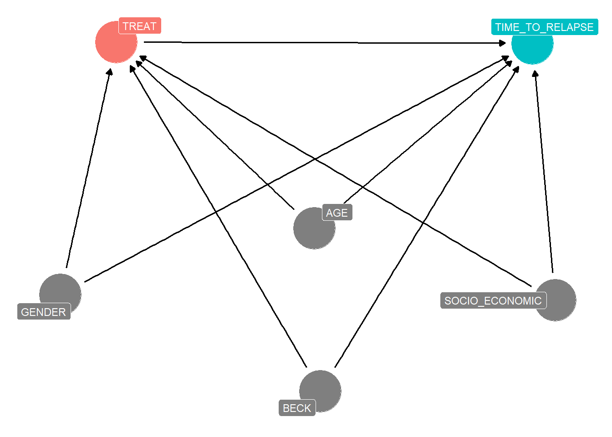

Appendix 1: R code and DAG of the motivating example
This is the R code to reproduce the motivating example:
set.seed(42) # Ensure reproducibility
# Number of patients
N <- 600
# Patient IDs
ID <- 1:N
# Generation of base variables
AGE <- pmax(pmin(round(rnorm(N, mean = 32, sd = 6.19)), 80), 18)
GENDER <- sample(0:1, N, replace = TRUE)
SOCIO_ECO <- sample(1:5, N, replace = TRUE)
SOCIO_ECO_2 <- as.numeric(SOCIO_ECO == 2)
SOCIO_ECO_3 <- as.numeric(SOCIO_ECO == 3)
SOCIO_ECO_4 <- as.numeric(SOCIO_ECO == 4)
SOCIO_ECO_5 <- as.numeric(SOCIO_ECO == 5)
# Generation of BECK score at diagnosis (BECK0)
BECK0 <- pmax(pmin(round(rnorm(N, mean = 30, sd = 9.33)), 63), 0)
# Utility function to generate binary variables based on a logistic model
logit_prob <- function(eta) {
1 / (1 + exp(-eta))
}
# Coefficients for predictors
coefficients <- list(
intercept = -5,
age = -0.04,
gender = -0.3,
beck0 = 0.2,
socio_eco_2 = -0.2,
socio_eco_3 = -0.1,
socio_eco_4 = 0.1,
socio_eco_5 = 0.3
)
# Generation of initial treatment (TREAT0)
eta_treat0 <- coefficients$intercept +
coefficients$age * AGE +
coefficients$gender * GENDER +
coefficients$beck0 * BECK0 +
coefficients$socio_eco_2 * SOCIO_ECO_2 +
coefficients$socio_eco_3 * SOCIO_ECO_3 +
coefficients$socio_eco_4 * SOCIO_ECO_4 +
coefficients$socio_eco_5 * SOCIO_ECO_5
TREAT0 <- rbinom(N, 1, logit_prob(eta_treat0 + rnorm(N)))
# Generation of BECK score after six weeks (BECK6)
coefficients <- list(
intercept = -7,
age = -0.05,
gender = -0.1,
socio_eco_2 = -0.2,
socio_eco_3 = -0.1,
socio_eco_4 = 0.1,
socio_eco_5 = 0.3,
beck0 = 0.25,
treat0 = -3
)
eta_beck6 <- coefficients$intercept +
coefficients$age * AGE +
coefficients$gender * GENDER +
coefficients$socio_eco_2 * SOCIO_ECO_2 +
coefficients$socio_eco_3 * SOCIO_ECO_3 +
coefficients$socio_eco_4 * SOCIO_ECO_4 +
coefficients$socio_eco_5 * SOCIO_ECO_5 +
coefficients$beck0 * BECK0 +
coefficients$treat0 * TREAT0
BECK6 <- pmax(pmin(round(rnorm(N, mean = BECK0 + eta_beck6 + rnorm(N), sd = 9.33)), 63), 0)
# Generation of change indicator (CHANGE_BECK) and switch at 6 weeks (SWITCH)
CLINICAL_CHANGE_BECK <- ifelse(((BECK6 - BECK0)/(BECK0)*100) > -20, 1, 0)
# Generation of the switch variable with condition
coefficients <- list(
intercept = -3,
age = -0.01,
gender = -0.05,
socio_eco_2 = -0.05,
socio_eco_3 = -0.02,
socio_eco_4 = 0.02,
socio_eco_5 = 0.05,
treat0 = -0.5,
clinical_change_beck = 2
)
# Define eta_switch based on achieving the clinical change
eta_switch <- coefficients$intercept +
coefficients$age * AGE +
coefficients$gender * GENDER +
coefficients$treat0 * TREAT0 +
coefficients$clinical_change_beck * (1 - CLINICAL_CHANGE_BECK) +
coefficients$socio_eco_2 * SOCIO_ECO_2 +
coefficients$socio_eco_3 * SOCIO_ECO_3 +
coefficients$socio_eco_4 * SOCIO_ECO_4 +
coefficients$socio_eco_5 * SOCIO_ECO_5 +
rnorm(N)
# Generate the switch variable ensuring it cannot switch before week 6
SWITCH <- ifelse(CLINICAL_CHANGE_BECK == 1, rbinom(N, 1, logit_prob(eta_switch)), 0)
# Generation of relapse (EVENT) and time until relapse (TIME_TO_EVENT)
base_hazard <- 0.0005
EVENT <- numeric(N)
TIME_TO_EVENT <- numeric(N)
max_follow_up <- 52 # Maximum follow-up duration in weeks
coefficients <- list(
intercept = -4,
age = 0.01,
gender = 0.1,
socio_eco_2 = 0.05,
socio_eco_3 = 0.02,
socio_eco_4 = -0.03,
socio_eco_5 = -0.08,
beck0 = 0.2,
treat0 = -0.5,
clinical_change_beck = -1.5,
switch = 0.3
)
for (i in 1:N) {
eta_event <- coefficients$intercept +
coefficients$age * AGE[i] +
coefficients$gender * GENDER[i] +
coefficients$beck0 * BECK0[i] +
coefficients$socio_eco_2 * SOCIO_ECO_2[i] +
coefficients$socio_eco_3 * SOCIO_ECO_3[i] +
coefficients$socio_eco_4 * SOCIO_ECO_4[i] +
coefficients$socio_eco_5 * SOCIO_ECO_5[i] +
coefficients$treat0 * TREAT0[i] +
coefficients$clinical_change_beck * CLINICAL_CHANGE_BECK[i] +
coefficients$switch * SWITCH[i] + rnorm(1)
adjusted_hazard <- base_hazard * exp(eta_event)
# Generate time to event after week 6
TIME_TO_EVENT[i] <- ifelse(SWITCH[i] == 1,
round(rexp(1, rate = adjusted_hazard), 0) + 6,
round(rexp(1, rate = adjusted_hazard), 0) + 1)
# Ensure EVENT only occurs after week 6
EVENT[i] <- as.integer(TIME_TO_EVENT[i] <= max_follow_up & TIME_TO_EVENT[i] > 6)
# Set TIME_TO_EVENT to max_follow_up if EVENT does not occur
TIME_TO_EVENT[i] <- ifelse(EVENT[i] == 1, TIME_TO_EVENT[i], max_follow_up)
}
# Censoring management
censoring_rate <- 0.05 # Censoring rate
CENSORING_TIME <- round(rexp(N, rate = -log(1 - censoring_rate)), 0) + 1 # Censoring time
CENSORING_TIME[CENSORING_TIME > max_follow_up] <- max_follow_up # Limit to maximum
# Adjust TIME_TO_EVENT based on censored data
TIME_TO_EVENT <- pmin(TIME_TO_EVENT, CENSORING_TIME)
# Verify that SWITCH is consistent with TIME_TO_EVENT
TIME_TO_EVENT <- ifelse(SWITCH == 1 & TIME_TO_EVENT < 6, TIME_TO_EVENT + 6, TIME_TO_EVENT)
# Organize data in a data frame
data <- data.frame(ID, AGE, GENDER, SOCIO_ECO, BECK0, BECK6, TREAT0, SWITCH, EVENT, TIME_TO_EVENT)
data$GENDER <- as.factor(data$GENDER)
data$SOCIO_ECO <- as.factor(data$SOCIO_ECO)
data$TREAT0 <- as.factor(data$TREAT0)
data$SWITCH <- as.factor(data$SWITCH)This is the DAG associated with the simulation process:

For simplicity, Z represents the confounders measured at baseline, which include age, gender, socioeconomic status, and the Beck score. The Beck score measured at week 6 is included as it serves as a prognostic variable for determining both the switch and relapse.